Assume every line is live. The ground around it can carry current further than it looks.

Stop walking. Look for the cable and anything it is touching.
Keep your feet close together, and shuffle away from the line.
Do not touch a car, fence or person that may be in contact.
Call the emergency services once you are clear.